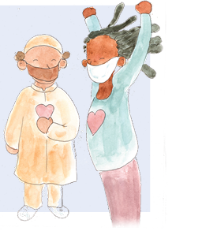
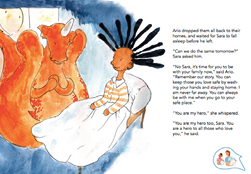

KEY MESSAGE 8 Being a responsible citizen of the world
Let’s CHAT Feeling safe and cared for Sara, Salem and Leila circle the world with Ario. Next stop, Ario introduces them to Kim who explains all about how he felt when he was sick with COVID-19.
ASK the children
My first thought is, “I’m glad I wasn’t there when Kim got sick. Why would I think that?”

Children might respond:
-
“The coronavirus can crawl from Kim to you and you don’t want to be sick and die.”
-
“I’m also glad I’m not there.”
-
“No one wants to be near anyone who was sick with COVID-19.”
We know the coronavirus is sneaky. We don’t see it as it passes from one person to another with ease. This virus does not infect all people the same. Some people get very sick and some less sick. Sometimes, we can’t tell that people have the virus. Not everyone who gets sick tells other people they are sick. They keep it a secret. Sometimes people are rejected after they were sick, so they keep it a secret because they don’t want to lose their friends. To keep everyone protected from the coronavirus it is important that everyone says, “I feel sick. I need your help,” immediately when they are sick.
ASK children
What can we do to encourage everyone to speak out immediately when they are sick?
Children might respond:
-
“We can let them know we won’t reject them.”
-
“We offer them help, like buying them food, when they are sick.”
It is a big relief that the coronavirus doesn’t stay in a person forever. When they are no longer contagious, we have no worries since we will not get the coronavirus from them. They are the same person as before they got sick. It is safe to talk and play and be together. People will feel safe to say, “I am sick.” when they know they will get our support. They are many kind safe ways we can show our support. Adults can help by delivering them food and medicine and offering to run their errands. Adults and children can call them on the phone and give them our care. Children can copy Leila and sing at their windows. Most important, is to remember to care for those who are sick - especially if they are older or alone.
Back to our story, it is almost the end. Ario puts Sara back into her bed. Her journey around the world has ended. When Sara began her journey, she was scared and felt the coronavirus had stolen her life. She wanted to be a hero and protect herself and tell children all over the world how to be safe. When she went to sleep, she did not know how to do this. As Ario says goodbye, Sara tells him, “You are my hero.” I imagine Ario smiled when he said, “You are my hero too, Sara.”
ASK the children
What did Ario and Sara do that makes them both heroes?
Children might say:
-
“They told children all over the world how to be safe and avoid catching the coronavirus.”
Let’s CHAT
They were heroes because they went around the world and made sure that all children knew how to protect themselves from being infected by the coronavirus.
ASK the children
What did all the children learn to do to be protected?
Children might say:
-
“To wash our hands with soap.”
-
“Stay home.”
-
“If I go outside to play, then don’t touch my eyes or nose until I wash my hands.”
-
“When I am outside of the house wear a mask.”
Let’s CHAT
It is important to remember all these rules of protection to avoid getting infected with the coronavirus:
-
Wash your hands with soap many times a day
-
Don’t touch your eyes or nose until you wash your hands
-
Stay home or close to home if you go out to play.
-
Avoid big groups of people.
-
Wear a mask outside of the house
-
When outside of the house, keep a safe physical distance.
-
When you return to school, follow school rules to stay safe.
If you do get the virus or you have symptoms and might have the coronavirus, be a hero, be responsible. Immediately, tell those people close to you so you can keep them safe and not infect them.
When you know people are sick, offer your kind support. Lastly, when they are healthy again, be there just as you were before they got sick.
ASK the children
Do you have any questions about any anything we read or talked about?
Let’s CHAT
When we join together, we can keep each other safe so we are all protected. Let’s go back to Sara. She’s now in her bed...
> Read this page of My Hero is You
